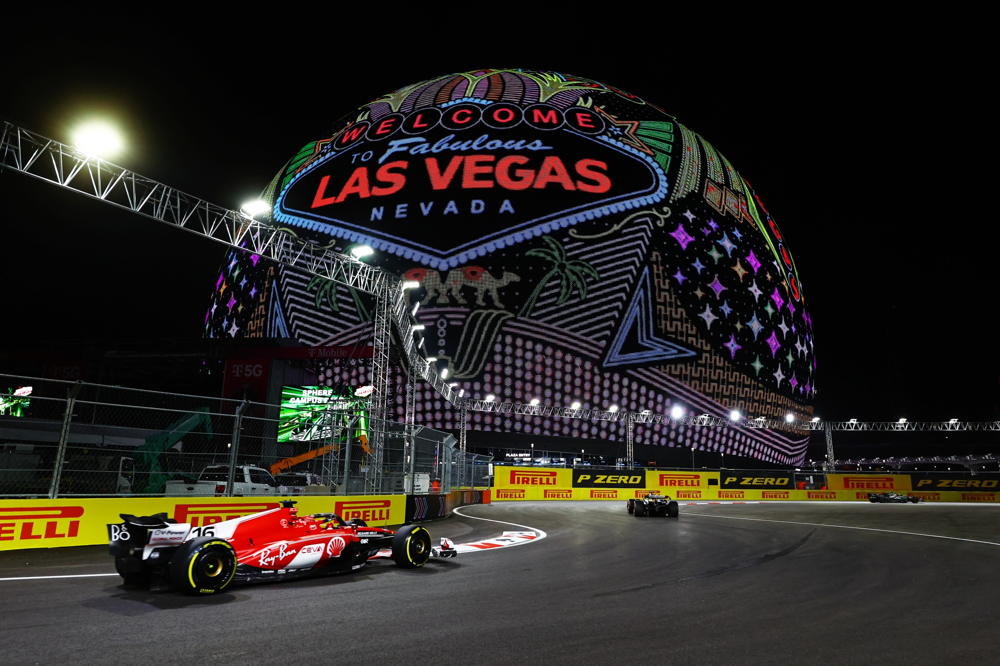

News Updates
Latest News Headlines
Did Williams offer Carlos Sainz a long term contract?
Speculation surrounds Carlos Sainz's future as rumors hint at a possible long-term deal with Williams. James Vowles has repeatedly said Carlos Sainz is his top priority.
Max Verstappen wins the Canadian Grand Prix
Max Verstappen secures a dominant victory at the Canadian Grand Prix, extending his lead in the championship.
Ferrari's Terrible 2024 Canadian Grand Prix
Ferrari faces a disappointing weekend in Canada with both cars failing to finish the race, while previously both exited qualifying in q2.
Could Alpine really bench Ocon for the Canadian Grand Prix?
Speculations are rife about Esteban Ocon's position in the upcoming Canadian Grand Prix. Team dynamics and recent performance, such as from the Monaco grand prix suggest potential lineup changes.
Charles Leclerc wins the Monaco Grand Prix
Charles Leclerc clinched a spectacular victory at the Monaco Grand Prix, dominating the race from start to finish. This win marks a significant milestone for the Montesquieu Ferrari driver.
Christian Horner calls on Red Bull to understand weaknesses after challenging Monaco GP
Red Bull Racing's team principal, Christian Horner, has urged his team to thoroughly analyze and address their shortcomings following a tough outing at the Monaco Grand Prix.
Verstappen holds off a thrilling late charge from Norris to win Emilia-Romagna Grand Prix
Max Verstappen secured a hard-fought win at the Emilia-Romagna Grand Prix, fending off a dramatic late push from Lando Norris to maintain his lead.
Lando Norris, A Race Winner
Lando Norris has emerged as a race winner, showcasing his talent and resilience on the track. His recent performance in Miami signal his rising status in the Formula 1 world.
Upcoming Events
Formula 1: Spanish Grand Prix
Dates: June 7-9, 2024Formula 2: Spanish Grand Prix
Dates: June 21-23, 2024Formula 3: Spanish Grand Prix
Dates: June 21-23, 2024F1 Academy: Spanish Grand Prix
Dates: June 21-23, 2024